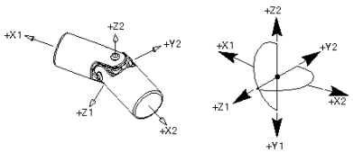

定义万向节的方位需要其它运动副类似所不需要的输入。
万向节需要定义两个矢量
您需要单独定义操作连杆与基本连杆的方位
您可以通过选择操作连杆的几何体来自动判断方位
万向节的原点必须位于 X1 — X2 的交点处，如图所示。尽量不要在连杆的 X 轴间角度小于90度处创建万向节。

指定 X1 方向是最简单的定向万向节方位的方法，使用这个方法来定义万向节的旋转纵轴，而无需考虑 Y 轴和 Z 轴的初始方位，由于 Y 轴和 Z 轴将进行类似的旋转，因此它们的初始方位可能不是很重要。